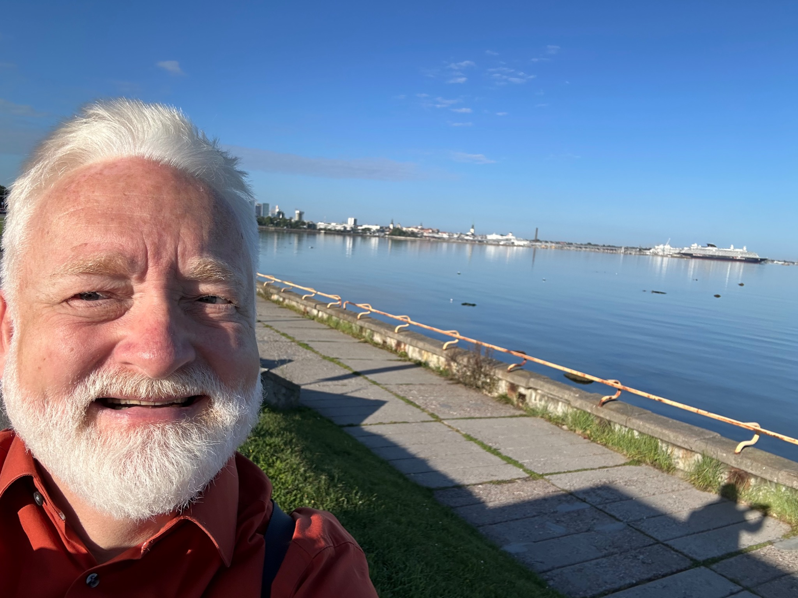

Christian Rathmann
Über mich
Ein Forschungsprofil, das Gebärdensprachlinguistik, Mehrsprachigkeit, Deaf Studies, Sprachenrechte, professionelle Kommunikation und Bildung verbindet.

Ich bin Professor an der Abteilung Deaf Studies und Gebärdensprachdolmetschen der Humboldt-Universität zu Berlin. Mein wissenschaftlicher Hintergrund liegt in der Linguistik mit einem besonderen Schwerpunkt auf Gebärdensprachen und ihren strukturellen, soziolinguistischen, bildungsbezogenen und gesellschaftlichen Dimensionen.
Meine Forschung umfasst sechs miteinander verbundene Bereiche: Gebärdensprachlinguistik, Gebärdensprachsoziolinguistik, Deaf Studies, Sprachpolitik und Sprachplanung, Dolmetschen und Translation sowie Lernen, Lehren und Prüfen von Gebärdensprachen. Bereichsübergreifend interessieren mich die Beziehungen zwischen sprachlicher Struktur, Sprachgebrauch, multilingualen Repertoires, Deaf Communities, Institutionen und Sprachenrechten.
Ein zentraler Schwerpunkt meiner Arbeit liegt auf Sprachvariation und Mehrsprachigkeit in Deaf Communities. Dazu gehören Sprachkontakt, Globalisierung und International Sign Language (IntSL), das ich als zusätzliche Sprache innerhalb multilingualer Deaf-Sprachökologien untersuche.
Meine Arbeit in den Deaf Studies basiert auf einem T*taubenzentrierten und communityzentrierten Verständnis des Feldes. Im Mittelpunkt stehen insbesondere die Beziehungen zwischen Gebärdensprachen, Deaf Communities, kulturellem Wissen, Community-Handlungsmacht, institutioneller Macht sowie individuellen und kollektiven Sprachenrechten.
In der Dolmetsch- und Translationswissenschaft untersuche ich Dolmetschen, Translation und Mediation zwischen Gebärdensprachen, Lautsprachen und Schriftsprachen. Meine Forschung zum Lernen, Lehren und Prüfen von Gebärdensprachen beschäftigt sich mit Lerner:innenprofilen, Curricula, Kompetenzrahmen, Professionalisierung von Lehrkräften, Sprachprüfung und gerechtem Zugang zu Lerngelegenheiten.
Über meine Forschungsbereiche hinweg möchte ich linguistische und interdisziplinäre Forschung mit Fragen verbinden, die für Gebärdensprachgemeinschaften, Bildungsinstitutionen und Sprachpolitik relevant sind. Dazu gehören der Aufbau von Forschungsinfrastrukturen, die Entwicklung von Bildungsressourcen und internationale Kooperationen, die Gebärdensprachen als Sprachen der Alltagskommunikation, Bildung, professionellen Praxis, Wissenschaft und Öffentlichkeit stärken.